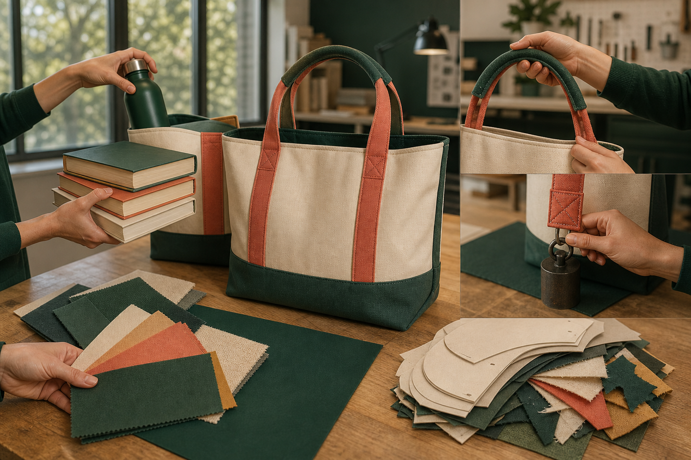
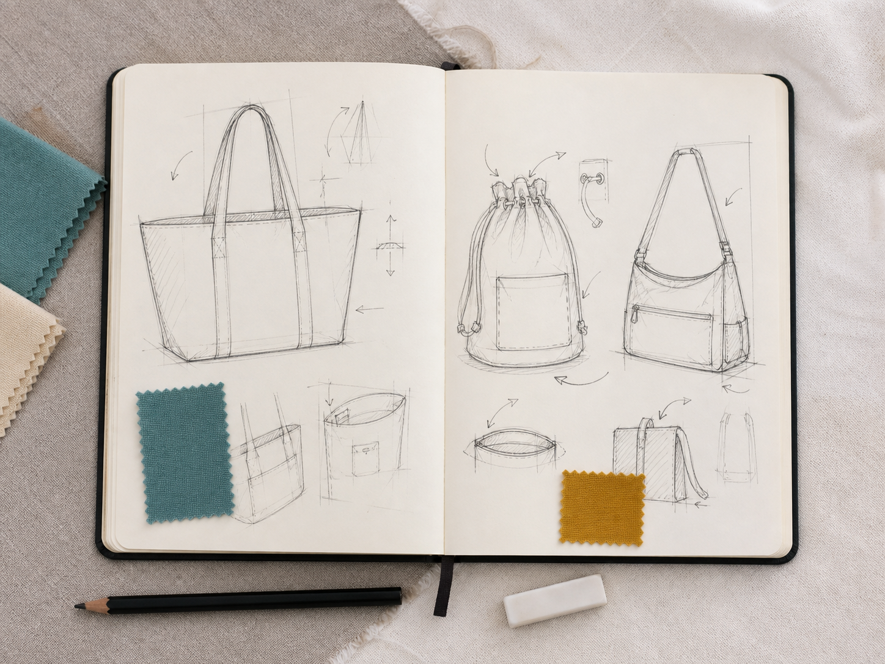
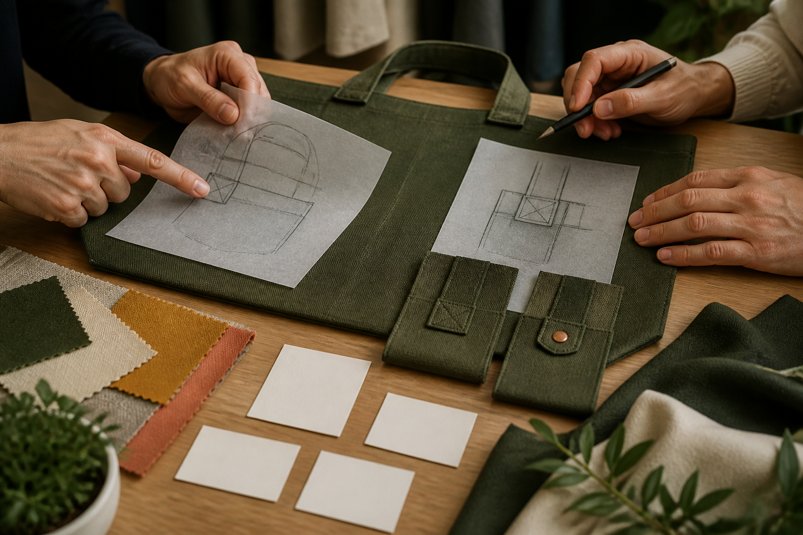

Section 1
Factors Affecting Design and Criteria for Success
Learning purpose: Help students translate user, function, aesthetics, durability, ergonomics, ethics and environmental impact into clear draft criteria that can guide development and evaluation.
A design brief explains the problem; design factors reveal what must be considered; criteria for success describe what evidence would show that a solution responds well. Keeping these roles separate makes decisions easier to justify.
The Awesome Bag is shaped by several connected factors. Function concerns what the carry item must do. Aesthetics concerns its visual and sensory character. Durability concerns continued service, ergonomics concerns the relationship between product and user, ethics concerns responsible effects on people and decisions, and environmental impact considers effects across the life cycle.
User needs connect the factors. The intended contents and situation influence capacity and access; the user's body and carrying context influence comfort; the desired message influences decoration; expected handling influences material and construction intentions. A feature is not successful simply because the designer likes it.
A criterion for success is a specific statement used to judge a solution. 'Looks good' is vague. 'The intended user can recognise the original reuse message and explains how it relates to the product' is clearer because it identifies audience, purpose and possible evidence. Draft criteria guide design development, while the teacher's formal criteria remain the controlling assessment source.
Criteria can compete. A large decoration may strengthen visual impact but add time, processes or stiffness. A very compact form may reduce material use but fail to hold the intended items. Designers rank important needs, explain trade-offs and revise ideas rather than pretending every factor can be maximised at once.
Key vocabulary
- design factor
- An aspect such as user, function, aesthetics, durability, ergonomics, ethics or environment that influences decisions.
- criterion for success
- A clear statement used to judge how well a design solution meets an intended need.
- ergonomics
- The relationship between a product, the people who use it and the tasks they perform.
- evidence
- Information from observation, testing, feedback or records used to support a judgement.
- priority
- A factor or need given greater importance when decisions or trade-offs are made.
Improving a vague carrying criterion
- Start with the vague statement: 'The bag will be comfortable.'
- Identify the factor and user relationship: ergonomics during the intended carrying task.
- Rewrite it as a draft criterion: 'During an agreed trial, the intended user can carry the planned contents using the designed carrying feature and describes the experience as secure and manageable.'
- Name evidence: observation of the trial and the user's specific feedback, while leaving exact test conditions to the approved project process.
Conclusion: The revised criterion is useful because it names the user, task and evidence without inventing an unsupported dimension or load.
Ideas to challenge
- A feature list and criteria for success are the same thing.
- A criterion is strong if it uses praise words such as excellent or amazing without defining evidence.
- Good design always maximises every factor, so trade-offs should be hidden.
Read the design factors
Consider user, function, aesthetics, durability, ergonomics, ethics and environmental impact, and explain how each relevant factor affects a decision.
Write a checkable criterion
Name what should happen, for whom or under what intended use, and what observation, testing or feedback could provide evidence.
Prioritise trade-offs
When criteria compete, identify the gain and cost, rank the most important need and justify the balance rather than claiming every factor is maximised.

Complete non-video pathway
Vague-to-checkable criterion clinic
Rewriting and evidence-tagging draft statements teaches the same factor–criterion–evidence chain.
Before
- Read the distinction between design brief, factor and criterion.
- Study the factor-to-evidence design-board chain.
During
- Match each statement to the main design factor and intended user need.
- Rewrite it to name the expected performance or communication outcome.
- Add an appropriate evidence source such as observation, agreed testing, user feedback or a production record.
- Choose one likely trade-off and explain which need should take priority.
After
- Check that no formal descriptor or unsupported project measurement has been invented.
- Keep the criteria as drafts until the teacher confirms the current task requirements.
Evidence to keep: Three checkable draft criteria with evidence sources and one prioritised trade-off.
Check, apply and save evidence0/10 + response
Answer all ten checks. Feedback appears after each choice, so use it to revisit the linked theory before continuing.
Higher-order response
Explain your thinking
Develop a set of clear draft criteria for an Awesome Bag concept and explain how you would resolve one likely trade-off.
Build your response
- Identify the intended user and carrying task.
- Select relevant factors from function, aesthetics, durability, ergonomics, ethics and environmental impact.
- Write at least four checkable draft criteria without inventing dimensions, loads or performance levels.
- Name the observation, agreed test, feedback or record that could provide evidence for each criterion.
- Explain one likely conflict, the priority you would set and the reason for that balance.
Success looks like
- Translates relevant design factors into specific, evidence-linked draft criteria.
- Makes a transparent, user-centred trade-off decision while respecting the formal-criteria boundary.
Nothing saved yet.
Resume this packageSection 2
Research, Inspiration and Three Design Ideas
Learning purpose: Teach students to conduct purposeful research, transform rather than copy inspiration, and communicate three genuinely different annotated design directions.
Research should expand the decisions a designer can make. It is most useful when every source or observation answers a question about the user, function, material behaviour, production, communication or environmental responsibility.
Purposeful research begins with questions. What must the intended user carry? How do existing products provide access and carrying? Which textile properties or decoration samples suit the task? What problems do users report? Recording the source, observation and relevance prevents a mood board from becoming a collection of unexplained pictures.
Inspiration is transformed, not copied. A designer can learn from a product's function, proportion, arrangement or joining idea, then apply that principle in an original direction. Commercial designs and cultural expressions are not templates to reproduce. Source acknowledgement and the ICIP pause-and-check protocol remain part of responsible research.
Three design ideas should explore genuinely different solutions, not one sketch with three colours. Each direction can vary the carrying pathway, access, arrangement, decoration concept, material intention or response to the environmental problem. Differences should connect to the draft criteria rather than novelty alone.
Annotated sketches communicate thinking. Labels and arrows explain user, function, feature relationships, tentative material choices, decoration placement, likely construction order and criteria links. Comparing all three ideas exposes strengths and risks before the designer invests in one final direction.
Key vocabulary
- design research
- Purposeful investigation that provides evidence for design decisions.
- inspiration
- An observation or principle that stimulates an original design response rather than being copied.
- concept
- An early coherent design direction showing how major features might solve the brief.
- annotation
- A concise label, note or arrow explaining a design decision and its purpose.
- relevance
- The direct usefulness of research evidence to a design question or criterion.
Turning one carrying observation into three original concepts
- Record the research observation: users value quick access but also want the intended contents to remain secure.
- Concept A explores an open tote-style pathway with carrying features and placement developed around convenient access.
- Concept B explores a drawstring-style pathway in which closure and carrying are related, without assuming final local dimensions or cord details.
- Concept C develops another original arrangement within the approved carry-item brief, changing feature relationships rather than just colour.
- Annotate each concept against access, carrying, material efficiency, decoration placement and likely trade-offs.
Conclusion: One research insight can generate several original responses when each concept explores a different relationship between features and criteria.
Ideas to challenge
- A page of attractive images counts as design research even when no source or relevance is recorded.
- Changing one concept's colours produces three different design ideas.
- Acknowledging a source gives permission to copy any commercial or cultural design.
Research with a question
Record the design question, source or observation, what was learned and why it matters to the user, product or criterion.
Develop three distinct concepts
Vary important relationships such as carrying, access, arrangement, decoration, material intention or environmental response—not colour alone.
Annotate the thinking
Use labels and arrows to explain user, function, feature relationships, tentative materials, decoration placement, production thinking and criteria links.

Complete non-video pathway
One insight, three directions
One credited functional observation is deliberately transformed into three different feature relationships and trade-offs.
Before
- Read the adjacent research, attribution and transformation explanation.
- Choose one relevant, credited observation and record its source and relevance.
During
- Write the research question, source or observation and its relevance to a draft criterion.
- List three different feature relationships that could respond to the observation.
- Sketch each concept and annotate user, access, carrying, decoration, material intention and a likely trade-off.
- Check that the concepts differ in more than colour, then record any authority or evidence question still unresolved.
After
- Credit the observation and check each concept for originality.
- Select the strongest question to test next rather than choosing a final design prematurely.
Evidence to keep: One credited insight and three genuinely different annotated concepts.
Check, apply and save evidence0/10 + response
Answer all ten checks. Feedback appears after each choice, so use it to revisit the linked theory before continuing.
Higher-order response
Explain your thinking
Use one purposeful research insight to develop and compare three genuinely different Awesome Bag concepts.
Build your response
- State the design question, research source or observation and why it is relevant.
- Describe how each concept changes important relationships such as carrying, access, arrangement, decoration or environmental response.
- List the annotations needed to communicate user, function, materials, production thinking and criteria links.
- Compare the three directions against at least three draft criteria.
- Identify the strongest direction for peer feedback and one uncertainty that still needs evidence or authority.
Success looks like
- Transforms traceable research into three distinct, original and well-annotated concept directions.
- Uses shared criteria and trade-off reasoning to compare concepts without copying or inventing project requirements.
Nothing saved yet.
Resume this packageSection 3
Peer Feedback, Final Design and Justification
Learning purpose: Build criteria-based feedback, evidence-led revision and clear final-design justification while preserving the boundary between student development and teacher-approved requirements.
Peer feedback is useful when it helps a designer see how well an idea responds to the brief. The designer then decides what to adopt, adapt or reject and records the reason before communicating a final direction.
Strong feedback is specific, criteria-based and actionable. 'I like it' reports a reaction but gives no next step. 'The reuse message is clear, but the decoration appears close to the intended seam area; test a revised placement' identifies evidence, a criterion and an action without taking ownership away from the designer.
Receiving feedback does not mean accepting every suggestion. The designer sorts comments into adopt, adapt or reject, then explains each decision with user evidence, sample evidence, project authority or a criterion. Conflicting comments may reveal a question that needs a prototype or teacher clarification rather than a quick vote.
A final design should communicate enough information for planning. An annotated drawing shows the overall form, intended user, key feature relationships, carrying and access approach, decoration placement, tentative material choices and links to criteria. Exact pattern, dimensions and local production requirements must come from the approved project source.
Justification explains why the final direction is stronger, not why it is perfect. It connects research, feedback, criteria and trade-offs to each major decision. A small change log preserves the development story: what changed, what evidence caused the change and how the revision improves the response to the brief.
Key vocabulary
- actionable feedback
- Specific feedback that identifies a reason and a possible next action.
- adopt
- Accept and use a feedback suggestion.
- adapt
- Modify a feedback suggestion before using it.
- reject
- Decide not to use a suggestion and explain the evidence-based reason.
- justification
- A reasoned explanation supported by evidence and criteria.
Turning feedback into a documented design revision
- Record the feedback: the decoration communicates the message, but its current position may be caught in a future seam area.
- Check the relevant evidence: panel plan, sample scale and criterion for clear communication without interfering with construction.
- Adapt the suggestion by moving and slightly rescaling the original decoration while preserving its message.
- Update the annotated final drawing and change log, then justify the revision with the feedback, criterion and planned production relationship.
Conclusion: The feedback becomes valuable because it leads to a traceable decision and an improved final communication, not because a peer automatically controls the design.
Ideas to challenge
- Useful peer feedback is mainly praise or a score.
- A designer must accept every suggestion to show that feedback was used.
- A final design is complete if it looks polished, even when its features and decisions are not annotated.
Give useful feedback
Name the observed strength or issue, link it to a criterion or user need, and suggest a possible action or question.
Decide and document
Adopt, adapt or reject each useful suggestion with a reason from user evidence, samples, criteria or approved authority, then record the change.
Communicate and justify the final direction
Show overall form, intended user, feature relationships, carrying, access, decoration, tentative materials and criteria links; justify major decisions through research, feedback and trade-offs.

Complete non-video pathway
Feedback conference rehearsal
The structured conference produces the same evidence chain from criterion-based comment to revision and final justification.
Before
- Read the adjacent feedback and justification explanation.
- Prepare one annotated concept and the current draft criteria.
During
- Identify one clear strength and explain which user need or criterion it supports.
- Identify one issue or uncertainty and cite visible evidence in the sketch or annotations.
- Suggest one possible action or test without redesigning the whole product for the designer.
- As the designer, classify the suggestion as adopt, adapt or reject and record an evidence-based reason.
- Update one annotation or change-log entry so the decision remains traceable.
After
- Write a concise final-direction justification from criteria and evidence.
- Keep any teacher-controlled requirement clearly marked as unconfirmed until approved.
Evidence to keep: A criteria-based feedback record, adopt-adapt-reject decision and traceable revision.
Check, apply and save evidence0/10 + response
Answer all ten checks. Feedback appears after each choice, so use it to revisit the linked theory before continuing.
Higher-order response
Explain your thinking
Use criteria-based peer feedback to revise and justify a final Awesome Bag design direction.
Build your response
- Record one strength, one issue and one question from peer feedback, each linked to visible evidence or a criterion.
- Classify each suggestion as adopt, adapt or reject and explain the evidence-based reason.
- Describe the revisions that will appear in the annotated final design and change log.
- Explain how the final direction responds to the user, function, decoration, responsible design and major trade-offs.
- Identify any exact pattern, dimension, material or production detail that must remain with the approved project authority.
Success looks like
- Uses specific feedback as evidence while preserving the designer's reasoned decision-making role.
- Communicates and justifies a coherent final direction without inventing unconfirmed project requirements.
Nothing saved yet.
Resume this packageModule review
Three sections, one connected idea
Use these direct links to reopen any incomplete package. A section counts when all ten checks and a substantive long response are saved.